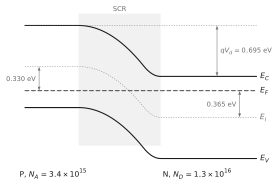
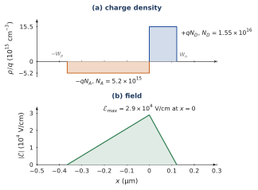
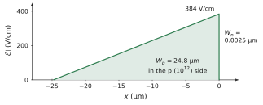
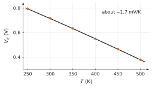
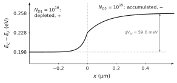

The constant Fermi level; the depletion layer and the depletion approximation; Poisson’s equation, the triangular field and the parabolic potential; Vd=qkTlnni2NAND; W=q2εVdNANDNA+ND, NAWp=NDWn, Emax=qNDWn/ε; the band diagram and the carrier densities across the junction; N side grounded.
Data
Silicon at 300 K: ni=1010cm−3, kT/q=25.9 mV, ε=1.036×10−12 F/cm, NC=2.8×1019, NV=1.04×1019cm−3, Eg=1.12 eV. Abrupt junctions with uniform doping on each side unless stated otherwise.
Problem 5.1Reading a band diagramB · Guided calculation
Adapted from Neamen, Problem 7.6, p. 269
A silicon junction at equilibrium is doped so that, in the neutral regions, EF−Ei=0.365 eV on the N side and Ei−EF=0.330 eV on the P side.
Sketch the band diagram of the two pieces apart, then of the junction, with EF flat. Mark qVd.
Deduce ND and NA.
Read Vd on the diagram, and check it with the formula for Vd.
Hint
On the diagram, qVd is the step of Ei between the two neutral regions, which is the distance between the two Fermi levels of the pieces apart.
Show the short answer
(b) ND=1.32×1016, NA=3.42×1015cm−3; (c) Vd=0.695 V.
Show the correction
(a) Apart, the Fermi level of the N piece is 0.365 eV above its Ei, that of the P piece 0.330 eV below. In contact EF is the same everywhere; the bands of the P side rise with respect to those of the N side by the difference of the two Fermi levels, which is qVd.
(b) ND=n0=nie0.365/0.0259=1010×1.32×106=1.32×1016cm−3 and NA=p0=nie0.330/0.0259=3.42×1015cm−3.
(c) qVd=0.365+0.330=0.695 eV, so Vd=0.695 V. The formula gives Vd=0.0259ln(1.32×1016×3.42×1015/1020)=0.0259×26.84=0.695 V: the same, since ln(NAND/ni2)=ln(ND/ni)+ln(NA/ni).

The junction at equilibrium, with the flat Fermi level (energies to scale, distances not).
Problem 5.2From the SCR back to the dopingsB · Guided calculation
Adapted from Neamen, Problem 7.8, p. 270
A silicon junction at equilibrium has Vd=0.710 V, and 25 % of its SCR lies in the N region.
Using the neutrality of the SCR, find the ratio NA/ND. Which side is more heavily doped?
Find NA and ND.
Compute W, Wn, Wp and Emax.
Sketch the charge density and the field. Where is the field largest?
Hint
NAWp=NDWn: the SCR extends further into the less doped side.
(d) The charge is −qNA over Wp and +qND over Wn: a lower, wider negative slab and a taller, narrower positive one, of equal areas. The field is a triangle, maximal at the metallurgical junction, x=0, and pointing from N to P.

Equal charges on the two sides: the lightly doped P side holds the wider part of the SCR. The field is largest at the metallurgical junction.
Problem 5.3A junction with an almost pure sideB · Guided calculation
Adapted from Neamen, Problem 7.13, p. 270
An n region with ND=1016cm−3 meets a very lightly doped p region with NA=1012cm−3, a model for an n region next to nearly intrinsic silicon.
Compute Vd. Why is it much smaller than that of the reference junction (0.835 V)?
Compute Wn, Wp and Emax. Sketch the field.
Compare Wp with the reference junction. What would happen to the SCR if the p region were only 10 µm thick?
Show the short answer
(a) 0.477 V; (b) Wn=2.5×10−3 µm, Wp=24.8 µm, Emax=384 V/cm; (c) 75 times wider; it would reach the contact.
Show the correction
(a) Vd=0.0259ln(1012×1016/1020)=0.0259ln108=0.477 V. Each decade of doping on either side adds VTln10=59.6 mV; the p side here has six decades less than the reference, which loses 6×0.0596=0.36 V.
(b) W=2εVd/(qNA) to excellent accuracy, since NA≪ND: W=24.8 µm, almost all on the p side; Wn=WpNA/ND=2.5×10−3 µm. Emax=qNAWp/ε=1.602×10−19×1012×2.48×10−3/1.036×10−12=384 V/cm. The field drops almost vertically in the thin N slab and decreases linearly over 25 µm of the p side.
(c) The reference junction has W=0.33 µm; this one is 75 times wider, because the few acceptors must be uncovered over a long distance to balance the charge. A p region only 10 µm thick would be fully depleted before neutrality is reached; the field would then extend to the contact, as in a p–i–n diode, and the formulas of the abrupt junction with two neutral regions would no longer apply.

Almost the whole SCR lies in the nearly intrinsic side, where the field is small.
Problem 5.4The built-in voltage and temperatureB · Guided calculation
Adapted from Sze & Lee, Ch. 3, Problem 3, p. 121
An abrupt silicon junction has NA=1017 and ND=1015cm−3.
Compute Vd at 250, 300, 350, 400, 450 and 500 K, using the expression of ni(T) of Problem 3.6 with Eg=1.12 eV and kT/q=25.9(T/300) mV. Plot Vd(T).
Explain the trend with the band diagram: what happens to the Fermi levels of the two pieces apart as T rises?
Up to which temperature are the dopings still the majority densities on both sides? What happens to Vd beyond?
(a) Vd=qkTlnni(T)2NAND. With ni=1.0×108, 1010, 2.8×1011, 3.5×1012, 2.5×1013 and 1.25×1014cm−3: Vd=0.795, 0.716, 0.634, 0.550, 0.465 and 0.379 V. The decrease is almost linear, about 1.7 mV/K.
(b) As T rises, ni grows quickly, and each Fermi level moves towards the intrinsic level of its piece: EF−Ei=kTln(ND/ni) decreases on the N side, Ei−EF on the P side. The step qVd, which is the distance between the two Fermi levels apart, shrinks.
(c) The less doped side loses its extrinsic character first, when ni approaches ND=1015cm−3; from Chapter 3 this happens around 520 K–600 K. Beyond, the N side becomes intrinsic, its Fermi level reaches Ei, and Vd falls to zero when both sides are intrinsic: the junction disappears.
(d) W=2εVd(NA+ND)/(qNAND)=9.7×10−5 cm =0.97 µm, almost all in the N side (Wn=0.957 µm), and Emax=qNDWn/ε=1.5×104 V/cm.

The built-in voltage falls almost linearly with temperature.
Problem 5.5Which side controls the field?B · Guided calculation
Adapted from Neamen, Problem 7.15, p. 271
Silicon junctions at equilibrium, 300 K.
With NA=1017cm−3, compute Vd and Emax for ND=1014, 1015, 1016 and 1017cm−3.
Show that for NA≫ND, Emax≃2qNDVd/ε. What does the field depend on?
What can you say about the case NA=1014cm−3 and the same values of ND?
(a) Vd=0.0259ln(NAND/1020) and Emax=ε2qVdNA+NDNAND, the second form following from Emax=2Vd/W for a triangular field. Results: ND=1014: 0.656 V and 4.5×103 V/cm; 1015: 0.716 V and 1.48×104 V/cm; 1016: 0.775 V and 4.67×104 V/cm; 1017: 0.835 V and 1.14×105 V/cm.
(b) When NA≫ND, NAND/(NA+ND)≃ND: Emax≃2qNDVd/ε. The field depends on the lightly doped side, and on the heavy side only through the logarithm in Vd. From 1014 to 1016 the field grows almost as ND (factor 10 for a factor 100).
(c) The roles are exchanged: with NA=1014, the field is controlled by NA as long as ND≫NA, and stays near 2qNAVd/ε≈5×103 V/cm, rising only slowly through Vd. Whenever one side is a hundred times more doped than the other, the junction is one-sided: everything (width, field) is fixed by the lightly doped side.
Problem 5.6How sharp are the edges of the SCR?C · Synthesis
Adapted from Neamen, Problem 7.14, p. 270
The depletion approximation assumes that the carriers vanish abruptly at the edges of the SCR. In reality the transition from the SCR to the neutral region takes a few Debye lengths, LD=εkT/(q2ND) on the N side.
Show that LD is a length, and interpret it: over LD, the potential changes by kT/q when the charge density is qND.
With NA=8×1017cm−3, compute LD, Wn and the ratio LD/Wn for ND=8×1014, 2.2×1016 and 8×1017cm−3.
The ratio barely changes with the doping. Show that LD/Wn≃2VdkT/q for a one-sided junction and explain why. Is the depletion approximation acceptable?
Hint
For a slab of charge density qND and thickness L, Poisson gives a potential drop qNDL2/(2ε).
(a) εkT/q2ND has units (F/cm)(V)/(C·cm−3) = (C/(V·cm))·V·cm³/C = cm²: LD is a length. From Poisson, a charge density qND over a length L creates a potential drop of order qNDL2/ε; setting it equal to kT/q gives L∼LD. Over a Debye length the potential changes by a thermal voltage, which changes the carrier density by a factor e: this is the distance over which the edge of the SCR is ‘blurred’.
(b) LD=0.145 µm, 0.028 µm and 0.0046 µm. Wn from the general formula: 1.11 µm, 0.220 µm and 0.0276 µm (in the symmetric case, half of W). Ratios: 0.13, 0.13 and 0.17.
(c) For a one-sided junction Wn=2εVd/qND, so LD/Wn=2εVd/(qND)εkT/(q2ND)=2VdkT/q: both lengths scale as 1/ND, and the ratio depends only on Vd, which varies logarithmically. With Vd≈0.75 V, 0.0259/1.5=0.13. The edge is blurred over about 13 % of the SCR width on each side: the depletion approximation is a good description of the SCR as a whole, and it improves under reverse bias, where Vd is replaced by Vd−V.
Problem 5.7Another junctionB · Guided calculation
From the course notes, Chapter 5
NA=1017cm−3, ND=1015cm−3. Compute the positions of EF in the two pieces apart, Vd by both routes, W, Wn, Wp and Emax. Compare with the reference junction.
Show the short answer
N piece: EF−Ei=0.0259ln(105)=0.298 eV; P piece: Ei−EF=0.0259ln(107)=0.417 eV; Vd=0.716 V by both routes. W=0.97 µm; Wn=0.96 µm; Wp=9.6 nm; Emax=14.8 kV/cm. Lower doping gives a smaller Vd, a wider layer and a weaker field.
Problem 5.8The hole current with EFB · Guided calculation
From the course notes, Chapter 5
Starting from Jp=qμppE−qDpdp/dx and p=nie(Ei−EF)/kT, show that Jp=μppdEF/dx.
Show the short answer
dp/dx=(p/kT)(dEi/dx−dEF/dx)=(p/kT)(qE−dEF/dx). With Dp=μpkT/q: −qDpdp/dx=−qμppE+μppdEF/dx; adding qμppE leaves Jp=μppdEF/dx.
Problem 5.9A bar and a batteryB · Guided calculation
From the course notes, Chapter 5
A bar of N silicon, ND=1016cm−3, 1 mm long, carries 10 mA/cm². (i) Its resistivity and the field? (ii) The slope of EF in eV/cm, from Jn=μnndEF/dx; compare with qE. (iii) The total drop of EF along the bar, and its relation to the voltage across it.
Show the short answer
(i) ρ=1/(qNDμn)=0.46Ω⋅cm; E=ρJ=4.6 mV/cm. (ii) dEF/dx=J/(μnND) in eV/cm when J is divided by q: 10−2/(1.602×10−19×1350×1016)=4.6×10−3 eV/cm, equal to qE: EF is parallel to the bands. (iii) 4.6×10−4 eV over 1 mm: q times the voltage across the bar, 0.46 mV.
Problem 5.10Vd and dopingB · Guided calculation
From the course notes, Chapter 5
(i) Show that Vd grows by 59.6 mV per decade of NA or of ND. (ii) Compute Vd for ND=1016 and NA=1015, 1016, 1017. (iii) Show that qVd=Eg−kTln(NC/ND)−kTln(NV/NA) and evaluate it with NC=2.8×1019, NV=1.04×1019cm−3; why does it differ slightly from 0.835 eV?
Show the short answer
(i) Vd=(kT/q)[lnNA+lnND−lnni2]: multiplying NA by 10 adds (kT/q)ln10=59.6 mV. (ii) 0.716 V, 0.775 V, 0.835 V. (iii) 1.12−0.206−0.061=0.853 eV; the difference comes from ni=1010 being a rounded reference value (6.9×109 with these NC, NV; Chapter 3).
Problem 5.11Holes, and mass actionB · Guided calculation
From the course notes, Chapter 5
(i) Redo route 1 with Jp=0 and recover (5.13). (ii) Show that n(x)p(x)=ni2 at every point of the SCR. (iii) Where is n=p? Compute its position from (5.15) and compare with Figure 5.8. Where is EF=Ei on the band diagram?
Show the short answer
(i) Jp=0 gives (1/p)dp/dx=−(q/kT)dV/dx; integrating from xp (p=pp0, V=−Vd) to xn (p=pn0, V=0): ln(pn0/pp0)=−qVd/kT. (ii) n=nn0eqV/kT and p=pp0e−q(V+Vd)/kT; their product is NDNAe−qVd/kT=ni2. (iii) n=ni where V=−(kT/q)ln(ND/ni)=−0.358 V. On the N side, V=−(qND/2ε)(x−xn)2 gives xn−x=2ε×0.358/qND=0.215 µm, so x=0.11 µm. There EF=Ei: the intrinsic level crosses the Fermi level.
Problem 5.12Poisson, step by stepB · Guided calculation
From the course notes, Chapter 5
(i) Integrate d2V/dx2=qNA/ε on the P side with E(xp)=0 and V(xp)=VP and recover the first line of (5.15). (ii) Derive (5.16) and (5.17). (iii) Solve them for Wn and Wp.
Show the short answer
(i) dV/dx=(qNA/ε)(x−xp) since E(xp)=0; then V=(qNA/2ε)(x−xp)2+VP. (ii) Equate dV/dx and V of the two arcs at x=0. (iii) Substitute Wp=NDWn/NA into (5.17): NDWn2(1+ND/NA)=2εVd/q, hence (5.18).
Problem 5.13A one-sided junctionB · Guided calculation
From the course notes, Chapter 5
For a P+N junction (NA≫ND), show that W≃2εVd/qND and Emax≃2qNDVd/ε. Compute both for ND=1014, 1016, 1018cm−3 (take Vd from (5.13) with NA=1019, ignoring degeneracy).
Show the short answer
Neglecting 1/NA in (5.18) and using (5.19). Vd=0.775, 0.894, 1.013 V; W=3.2 µm, 0.34 µm, 36 nm; Emax=4.9, 53, 560 kV/cm. At ND=1018 the one-sided assumption and non-degeneracy are both at their limit.
Problem 5.14Band diagram to scaleB · Guided calculation
From the course notes, Chapter 5
Using (5.15) and EC(x)=ECn−qV(x), compute EC−EF in the reference junction at x=−0.1, 0, 0.1, 0.2 and 0.327 µm (take Ei at mid-gap, so EC−EF=0.202 eV in neutral N), and check your values against the top of Figure 5.8. Where is the step qVd located, and where is EF=Ei?
Show the short answer
EC−EF=0.202−V(x) in eV: 1.037 eV at −0.1 µm (neutral P), 1.029 eV at 0 (the P side carries only 8 mV), 0.600 eV at 0.1 µm, 0.327 eV at 0.2 µm and 0.202 eV at xn. Almost all the bending is on the N side, over 0.33 µm; EF=Ei at x=0.11 µm. (With the course NC and NV instead of mid-gap Ei, EC−EF=0.206 eV in neutral N and EF−EV=0.061 eV in neutral P: the differences come from the rounded ni, Section 5.8.)
Challenge: a new situation
These problems apply the method of the chapter to a device, a material or a situation that the chapter did not treat. The reasoning does not change: state the physical picture, choose the model, compute, check.
Problem 5.15A junction without a change of typeC · Synthesis
Adapted from Neamen, Problem 7.12, p. 270
An ‘isotype’ junction joins two n regions of different doping: ND1=1016cm−3 for x<0 and ND2=1015cm−3 for x>0, at equilibrium.
Sketch the band diagram of the two pieces apart and in contact. Find the built-in voltage between the two neutral regions. Which side is at the higher potential?
Describe the charge near x=0: on one side electrons have left, on the other they have accumulated. Why can there be no depletion approximation with a ‘sharp edge’ on the accumulation side?
Estimate the width of the transition region with the Debye lengths of the two sides.
Would this junction rectify? Use the barrier for the majority carriers to argue.
The isotype step. After Neamen, Fig. P7.12, p. 270.Hint
The step of the bands is the difference of EC−EF between the two pieces apart.
Show the short answer
(a) Vbi=VTln(ND1/ND2)=59.6 mV, the 1016 side positive; (c) about 0.04 to 0.13 µm; (d) no.
Show the correction
(a) Apart, EC−EF=kTln(NC/ND): 0.146 eV on the 1016 side and 0.205 eV on the 1015 side. In contact EF is flat, and the bands of the lightly doped side are higher by 0.0596 eV: Vbi=VTln(ND1/ND2)=59.6 mV, with the heavily doped side at the higher potential (its electron energy is lower). This is the result of Problem 1.7 for a step instead of an exponential.
(b) Electrons diffuse from the 1016 side into the 1015 side. They leave behind a thin layer of uncovered donors (positive) on the heavily doped side and pile up as an accumulation layer (negative) on the lightly doped side. In an accumulation layer the charge is carried by the free electrons themselves, whose density varies continuously and exponentially with the potential: there is no region empty of carriers, hence no sharp edge.
(c) LD=εkT/q2ND is 0.042 µm on the 1016 side and 0.13 µm on the 1015 side; the transition region spans a few tenths of a micrometre at most.
(d) No. The barrier for the majority electrons is only 60 mV, about 2kT, and the majority carriers exist on both sides: a voltage of either sign simply moves electrons through a low barrier, almost like a resistor. A p–n junction rectifies because the carriers that would have to cross the high barrier in reverse are the rare minority carriers. Isotype junctions are used as ohmic contacts (an N+N contact) and as ‘back-surface fields’ in solar cells.

The conduction-band edge: depletion on the heavily doped side, accumulation on the lightly doped one, with no sharp edge.
Problem 5.16The linearly graded junctionC · Synthesis
Adapted from Sze & Lee, Ch. 3, Problem 6, p. 121
In a diffused junction the net doping varies linearly through the junction: ND−NA=ax, with a=1020 cm−4. Assume the depletion approximation on −W/2<x<W/2.
Write the charge density, integrate Poisson’s equation and show that the field is parabolic, with Emax=qaW2/(8ε) at x=0.
Integrate again and show that Vd=qaW3/(12ε), i.e. W=(12εVd/qa)1/3.
At the edges of the SCR the doping is ±aW/2. Show that Vd=q2kTln2niaW.
Solve (b) and (c) together by iteration, starting from Vd=0.7 V. Give Vd, W and Emax.
Hint
In (c), apply the formula of the abrupt junction to the dopings found at the two edges, NA=ND=aW/2.
Show the short answer
(d) Vd=0.668 V, W=0.80 µm, Emax=1.25×104 V/cm.
Show the correction
(a) ρ=qax in the SCR. Poisson: dE/dx=qax/ε, with E(±W/2)=0: E(x)=2εqa(x2−4W2), negative (pointing from N to P, i.e. towards −x) and largest in magnitude at x=0: ∣Emax∣=qaW2/(8ε).
(c) In the neutral regions near the edges, n=aW/2 on the N side and p=aW/2 on the P side; the built-in voltage between them is qkTlnni2(aW/2)2=q2kTln2niaW.
(d) Start with Vd=0.7 V: W=(12×1.036×10−12×0.7/1.602×10−19×1020)1/3=8.16×10−5 cm; then Vd=0.0518ln(1020×8.16×10−5/2×1010)=0.669 V; again W=8.03×10−5 cm and Vd=0.668 V. Converged: Vd=0.668 V, W=0.80 µm, Emax=1.602×10−19×1020×(8.03×10−5)2/(8×1.036×10−12)=1.25×104 V/cm. The iteration converges fast because Vd depends only logarithmically on W.